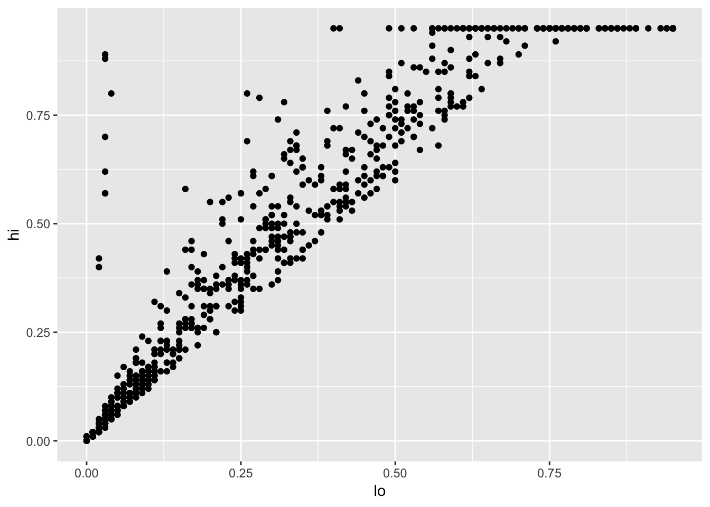
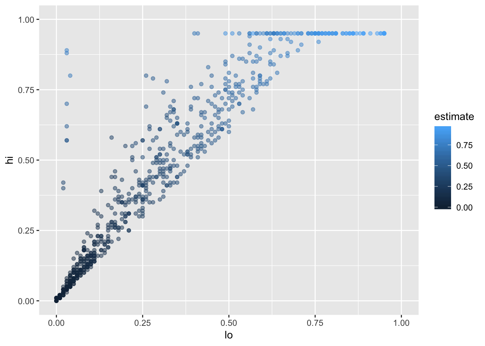
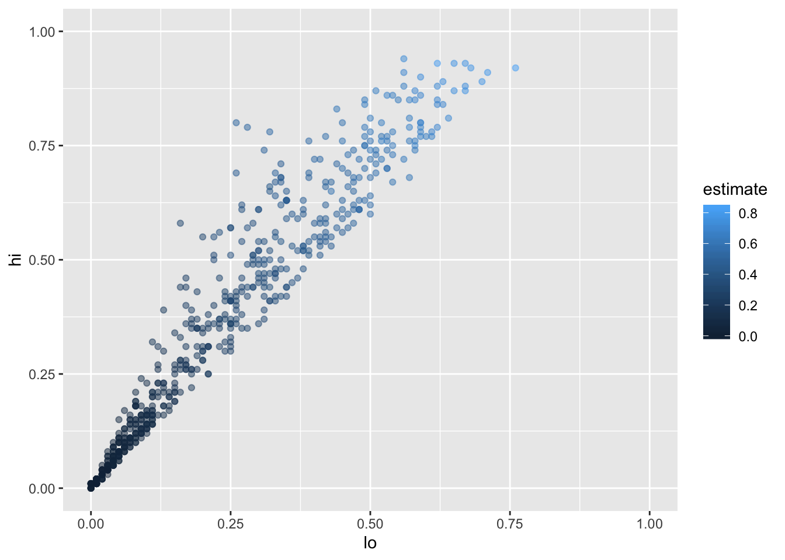
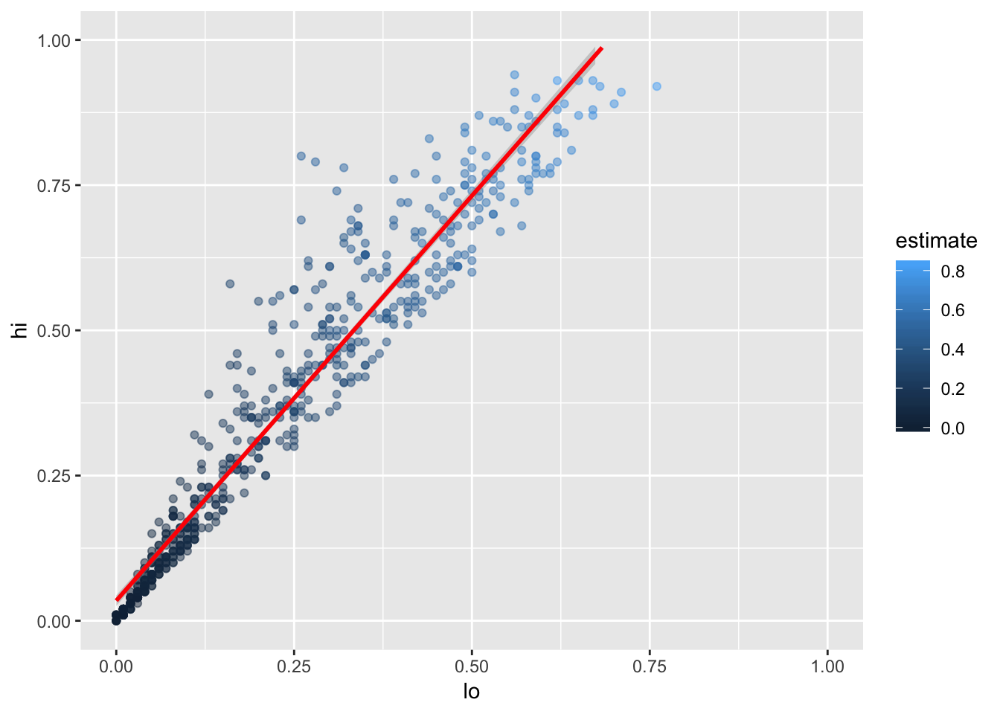
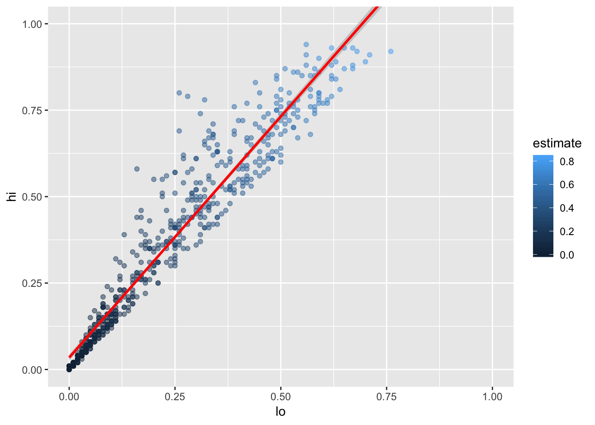

Chapter 5 The Tidyverse
5.1 Questions
- How do I install packages in R?
- How do I load packages in R?
- How do a read a CSV file in R?
- How does R store tabular data?
- How does R decide what data types to use for columns in CSV data?
- How can I inspect tabular data that I have loaded or created?
- How can I select sections of tabular data?
- How can I extract vectors from tables?
- How can I calculate basic statistics on tabular data?
- How does R treat missing data when calculating aggregate statistics?
- How can I control how R treats missing data when calculating aggregate statistics?
- What tools does the tidyverse provide for selecting, rearranging, changing, and summarizing tabular data?
- How should I combine tidyverse operations?
5.2 Learning Objectives
- Install and load packages in R.
- Read CSV data with R.
- Explain what a tibble is and how tibbles related to data frames and matrices.
- Describe how
read_csvinfers data types for columns in tabular datasets. - Name and use three functions for inspects tibbles.
- Select subsets of tabular data using column names, scalar indices, ranges, and logical expressions.
- Explain the difference between indexing with
[and with[[. - Name and use four functions for calculating aggregate statistics on tabular data.
- Explain how these functions treat
NAby default, and how to change that behavior. - Name, describe, and use a tidyverse function for choosing rows by value from tabular data.
- Name, describe, and use a tidyverse function for reordering rows of tabular data.
- Name, describe, and use a tidyverse function for selecting columns of tabular data.
- Name, describe, and use a tidyverse function for calculating new columns from existing ones.
- Name, describe, and use a tidyverse function for grouping rows of tabular data.
- Name, describe, and use a tidyverse function for aggregating grouped or ungrouped rows of tabular data.
There is no point in becoming fluent in Enochian if you do not then call forth a Dweller Beneath at the time of the new moon. Similarly, there is no point learning a language designed for data manipulation if you do not then bend data to your will. This chapter therefore looks at how to do the things that R was summoned—er, designed—to do.
5.3 How do I read data?
We begin by looking at the file results/infant_hiv.csv,
a tidied version of data on the percentage of infants born to women with HIV
who received an HIV test themselves within two months of birth.
The original data comes from the UNICEF site at https://data.unicef.org/resources/dataset/hiv-aids-statistical-tables/,
and this file contains:
country,year,estimate,hi,lo
AFG,2009,NA,NA,NA
AFG,2010,NA,NA,NA
...
AFG,2017,NA,NA,NA
AGO,2009,NA,NA,NA
AGO,2010,0.03,0.04,0.02
AGO,2011,0.05,0.07,0.04
AGO,2012,0.06,0.08,0.05
...
ZWE,2016,0.71,0.88,0.62
ZWE,2017,0.65,0.81,0.57The actual file has many more rows (and no ellipses).
It uses NA to show missing data rather than (for example) -, a space, or a blank,
and its values are interpreted as follows:
| Header | Datatype | Description |
|---|---|---|
| country | char | ISO3 country code of country reporting data |
| year | integer | year CE for which data reported |
| estimate | double/NA | estimated percentage of measurement |
| hi | double/NA | high end of range |
| lo | double/NA | low end of range |
We can load this data in Python like this:
import pandas as pd
infant_hiv = pd.read_csv('results/infant_hiv.csv')
print(infant_hiv) country year estimate hi lo
0 AFG 2009 NaN NaN NaN
1 AFG 2010 NaN NaN NaN
2 AFG 2011 NaN NaN NaN
3 AFG 2012 NaN NaN NaN
4 AFG 2013 NaN NaN NaN
5 AFG 2014 NaN NaN NaN
6 AFG 2015 NaN NaN NaN
7 AFG 2016 NaN NaN NaN
8 AFG 2017 NaN NaN NaN
...The equivalent in R is to load the tidyverse collection of libraries
and then call the read_csv function.
We will go through this in stages, since each produces output.
library(tidyverse)Error in library(tidyverse) : there is no package called 'tidyverse'Ah. We must install this, which we only need to do once per machine:
install.packages("tidyverse")We then load the library once per program:
library(tidyverse)── Attaching packages ─────────────────────────────────────── tidyverse 1.2.1 ──
✔ ggplot2 3.1.0 ✔ purrr 0.3.0
✔ tibble 2.0.1 ✔ dplyr 0.7.8
✔ tidyr 0.8.2 ✔ stringr 1.4.0
✔ readr 1.1.1 ✔ forcats 0.3.0
── Conflicts ────────────────────────────────────────── tidyverse_conflicts() ──
✖ dplyr::filter() masks stats::filter()
✖ dplyr::lag() masks stats::lag()
Warning messages:
1: package ‘tibble’ was built under R version 3.5.2
2: package ‘purrr’ was built under R version 3.5.2
3: package ‘stringr’ was built under R version 3.5.2Note that to install, we give install.packages a string,
but to use,
we simply give the name of the library we want.
Asking for the tidyverse gives us eight libraries (or packages).
One of those, dplyr, defines two functions that mask standard functions in R with the same names.
This is deliberate, and if we need the originals, we can get them with their
fully-qualified names
stats::filter and stats::lag.
Once we have the tidyverse loaded, reading the file looks remarkably like reading the file:
infant_hiv <- read_csv('results/infant_hiv.csv')Parsed with column specification:
cols(
country = col_character(),
year = col_integer(),
estimate = col_double(),
hi = col_double(),
lo = col_double()
)R’s read_csv tells us more about what it has done than Pandas does.
In particular, it guesses the data types of columns based on the first thousand values
and then tells us what types it has inferred.
(In a better universe,
people would habitually use the first two rows of their spreadsheets for name and units,
but we do not live there.)
We can now look at what read_csv has produced.
infant_hiv# A tibble: 1,728 x 5
country year estimate hi lo
<chr> <int> <dbl> <dbl> <dbl>
1 AFG 2009 NA NA NA
2 AFG 2010 NA NA NA
3 AFG 2011 NA NA NA
4 AFG 2012 NA NA NA
5 AFG 2013 NA NA NA
6 AFG 2014 NA NA NA
7 AFG 2015 NA NA NA
8 AFG 2016 NA NA NA
9 AFG 2017 NA NA NA
10 AGO 2009 NA NA NA
# … with 1,718 more rowsThis is a tibble,
which is the tidyverse’s enhanced version of R’s data.frame.
It organizes data into named columns,
each having one value for each row.
5.4 How do I inspect data?
We often have a quick look at the content of a table to remind ourselves what it contains.
Pandas does this using methods whose names are borrowed from the Unix shell’s head and tail commands:
print(infant_hiv.head()) country year estimate hi lo
0 AFG 2009 NaN NaN NaN
1 AFG 2010 NaN NaN NaN
2 AFG 2011 NaN NaN NaN
3 AFG 2012 NaN NaN NaN
4 AFG 2013 NaN NaN NaNprint(infant_hiv.tail()) country year estimate hi lo
1723 ZWE 2013 0.57 0.70 0.49
1724 ZWE 2014 0.54 0.67 0.47
1725 ZWE 2015 0.59 0.73 0.51
1726 ZWE 2016 0.71 0.88 0.62
1727 ZWE 2017 0.65 0.81 0.57R has similarly-named functions (not methods):
head(infant_hiv)# A tibble: 6 x 5
country year estimate hi lo
<chr> <int> <dbl> <dbl> <dbl>
1 AFG 2009 NA NA NA
2 AFG 2010 NA NA NA
3 AFG 2011 NA NA NA
4 AFG 2012 NA NA NA
5 AFG 2013 NA NA NA
6 AFG 2014 NA NA NAtail(infant_hiv)# A tibble: 6 x 5
country year estimate hi lo
<chr> <int> <dbl> <dbl> <dbl>
1 ZWE 2012 0.38 0.47 0.33
2 ZWE 2013 0.570 0.7 0.49
3 ZWE 2014 0.54 0.67 0.47
4 ZWE 2015 0.59 0.73 0.51
5 ZWE 2016 0.71 0.88 0.62
6 ZWE 2017 0.65 0.81 0.570Let’s have a closer look at that last command’s output:
tail(infant_hiv)# A tibble: 6 x 5
country year estimate hi lo
<chr> <int> <dbl> <dbl> <dbl>
1 ZWE 2012 0.38 0.47 0.33
2 ZWE 2013 0.570 0.7 0.49
3 ZWE 2014 0.54 0.67 0.47
4 ZWE 2015 0.59 0.73 0.51
5 ZWE 2016 0.71 0.88 0.62
6 ZWE 2017 0.65 0.81 0.570Note that the row numbers printed by tail are relative to the output,
not absolute to the table.
This is different from Pandas,
which retains the original row numbers.
What about overall information?
print(infant_hiv.info())<class 'pandas.core.frame.DataFrame'>
RangeIndex: 1728 entries, 0 to 1727
Data columns (total 5 columns):
country 1728 non-null object
year 1728 non-null int64
estimate 728 non-null float64
hi 728 non-null float64
lo 728 non-null float64
dtypes: float64(3), int64(1), object(1)
memory usage: 67.6+ KB
Nonesummary(infant_hiv) country year estimate hi
Length:1728 Min. :2009 Min. :0.000 Min. :0.0000
Class :character 1st Qu.:2011 1st Qu.:0.100 1st Qu.:0.1400
Mode :character Median :2013 Median :0.340 Median :0.4350
Mean :2013 Mean :0.387 Mean :0.4614
3rd Qu.:2015 3rd Qu.:0.620 3rd Qu.:0.7625
Max. :2017 Max. :0.950 Max. :0.9500
NA's :1000 NA's :1000
lo
Min. :0.0000
1st Qu.:0.0800
Median :0.2600
Mean :0.3221
3rd Qu.:0.5100
Max. :0.9500
NA's :1000 Your display of R’s summary may or may not wrap, depending on how large a screen the older acolytes have allowed you.
5.5 How do I index rows and columns?
A Pandas DataFrame is a collection of series (also called columns), each containing the values of a single observed variable:
print(infant_hiv['estimate'])0 NaN
1 NaN
2 NaN
3 NaN
4 NaN
5 NaN
6 NaN
7 NaN
8 NaN
9 NaN
10 0.03
11 0.05
12 0.06
13 0.15
14 0.10
15 0.06
16 0.01
17 0.01
18 NaN
19 NaN
...We would get exactly the same output in Python with infant_hiv.estimate,
i.e.,
with an attribute name rather than a string subscript.
The same tricks work in R:
infant_hiv['estimate']# A tibble: 1,728 x 1
estimate
<dbl>
1 NA
2 NA
3 NA
4 NA
5 NA
6 NA
7 NA
8 NA
9 NA
10 NA
# … with 1,718 more rowsHowever, R’s infant_hiv$estimate provides all the data:
infant_hiv$estimate [1] NA NA NA NA NA NA NA NA NA NA 0.03 0.05 0.06
[14] 0.15 0.10 0.06 0.01 0.01 NA NA NA NA NA NA NA NA
[27] NA NA NA NA NA NA NA NA NA NA NA NA NA
[40] NA NA NA NA NA NA NA NA 0.13 0.12 0.12 0.52 0.53
[53] 0.67 0.66 NA NA NA NA NA NA NA NA NA NA NA
[66] NA NA NA NA NA NA NA NA NA NA NA NA NA
[79] NA NA NA NA NA NA NA NA NA NA NA NA 0.26
[92] 0.24 0.38 0.55 0.61 0.74 0.83 0.75 0.74 NA 0.10 0.10 0.11 0.18
[105] 0.12 0.02 0.12 0.20 NA NA NA NA NA NA NA NA NA
[118] NA NA 0.10 0.09 0.12 0.26 0.27 0.25 0.32 0.03 0.09 0.13 0.19
[131] 0.25 0.30 0.28 0.15 0.16 NA 0.02 0.02 0.02 0.03 0.15 0.10 0.17
[144] 0.14 NA NA NA NA NA NA NA NA NA NA NA NA
[157] NA NA NA NA NA NA NA NA NA NA NA NA NA
[170] NA NA NA NA NA NA NA NA NA NA NA 0.95 0.95
[183] 0.95 0.95 0.95 0.95 0.80 0.95 0.87 0.77 0.75 0.72 0.51 0.55 0.50
[196] 0.62 0.37 0.36 0.07 0.46 0.46 0.46 0.46 0.44 0.43 0.42 0.40 0.25
[209] 0.25 0.46 0.25 0.45 0.45 0.46 0.46 0.45 NA NA NA NA NA
[222] NA NA NA NA NA NA NA NA NA NA NA NA NA
[235] NA NA NA NA NA NA NA NA NA NA 0.53 0.35 0.36
[248] 0.48 0.41 0.45 0.47 0.50 0.01 0.01 0.07 0.05 0.03 0.09 0.12 0.21
...Again, note that the boxed number on the left is the start index of that row.
What about single values? Remembering to count from zero from Python and as humans do for R, we have:
print(infant_hiv.estimate[11])0.05infant_hiv$estimate[12][1] 0.05Ah—everything in R is a vector, so we get a vector of one value as an output rather than a single value.
print(len(infant_hiv.estimate[11]))TypeError: object of type 'numpy.float64' has no len()
Detailed traceback:
File "<string>", line 1, in <module>length(infant_hiv$estimate[12])[1] 1And yes, ranges work:
print(infant_hiv.estimate[5:15])5 NaN
6 NaN
7 NaN
8 NaN
9 NaN
10 0.03
11 0.05
12 0.06
13 0.15
14 0.10
Name: estimate, dtype: float64infant_hiv$estimate[6:15] [1] NA NA NA NA NA 0.03 0.05 0.06 0.15 0.10Note that the upper bound is the same, because it’s inclusive in R and exclusive in Python. Note also that neither library prevents us from selecting a range of data that spans logical groups such as countries, which is why selecting by row number is usually a sign of innocence, insouciance, or desperation.
We can select by column number as well.
Pandas uses the rather clumsy object.iloc[rows, columns], with the usual : shortcut for “entire range”:
print(infant_hiv.iloc[:, 0])0 AFG
1 AFG
2 AFG
3 AFG
4 AFG
5 AFG
6 AFG
7 AFG
8 AFG
9 AGO
10 AGO
11 AGO
12 AGO
13 AGO
14 AGO
15 AGO
16 AGO
17 AGO
18 AIA
19 AIA
...Since this is a column, it can be indexed:
print(infant_hiv.iloc[:, 0][0])AFGIn R, a single index is interpreted as the column index:
infant_hiv[1]# A tibble: 1,728 x 1
country
<chr>
1 AFG
2 AFG
3 AFG
4 AFG
5 AFG
6 AFG
7 AFG
8 AFG
9 AFG
10 AGO
# … with 1,718 more rowsBut notice that the output is not a vector, but another tibble (i.e., a table with N rows and one column). This means that adding another index does column-wise indexing on that tibble:
infant_hiv[1][1]# A tibble: 1,728 x 1
country
<chr>
1 AFG
2 AFG
3 AFG
4 AFG
5 AFG
6 AFG
7 AFG
8 AFG
9 AFG
10 AGO
# … with 1,718 more rowsHow then are we to get the first mention of Afghanistan? The answer is to use double square brackets to strip away one level of structure:
infant_hiv[[1]] [1] "AFG" "AFG" "AFG" "AFG" "AFG" "AFG" "AFG" "AFG" "AFG" "AGO" "AGO"
[12] "AGO" "AGO" "AGO" "AGO" "AGO" "AGO" "AGO" "AIA" "AIA" "AIA" "AIA"
[23] "AIA" "AIA" "AIA" "AIA" "AIA" "ALB" "ALB" "ALB" "ALB" "ALB" "ALB"
[34] "ALB" "ALB" "ALB" "ARE" "ARE" "ARE" "ARE" "ARE" "ARE" "ARE" "ARE"
[45] "ARE" "ARG" "ARG" "ARG" "ARG" "ARG" "ARG" "ARG" "ARG" "ARG" "ARM"
[56] "ARM" "ARM" "ARM" "ARM" "ARM" "ARM" "ARM" "ARM" "ATG" "ATG" "ATG"
[67] "ATG" "ATG" "ATG" "ATG" "ATG" "ATG" "AUS" "AUS" "AUS" "AUS" "AUS"
[78] "AUS" "AUS" "AUS" "AUS" "AUT" "AUT" "AUT" "AUT" "AUT" "AUT" "AUT"
[89] "AUT" "AUT" "AZE" "AZE" "AZE" "AZE" "AZE" "AZE" "AZE" "AZE" "AZE"
[100] "BDI" "BDI" "BDI" "BDI" "BDI" "BDI" "BDI" "BDI" "BDI" "BEL" "BEL"
[111] "BEL" "BEL" "BEL" "BEL" "BEL" "BEL" "BEL" "BEN" "BEN" "BEN" "BEN"
[122] "BEN" "BEN" "BEN" "BEN" "BEN" "BFA" "BFA" "BFA" "BFA" "BFA" "BFA"
[133] "BFA" "BFA" "BFA" "BGD" "BGD" "BGD" "BGD" "BGD" "BGD" "BGD" "BGD"
[144] "BGD" "BGR" "BGR" "BGR" "BGR" "BGR" "BGR" "BGR" "BGR" "BGR" "BHR"
[155] "BHR" "BHR" "BHR" "BHR" "BHR" "BHR" "BHR" "BHR" "BHS" "BHS" "BHS"
[166] "BHS" "BHS" "BHS" "BHS" "BHS" "BHS" "BIH" "BIH" "BIH" "BIH" "BIH"
[177] "BIH" "BIH" "BIH" "BIH" "BLR" "BLR" "BLR" "BLR" "BLR" "BLR" "BLR"
[188] "BLR" "BLR" "BLZ" "BLZ" "BLZ" "BLZ" "BLZ" "BLZ" "BLZ" "BLZ" "BLZ"
[199] "BOL" "BOL" "BOL" "BOL" "BOL" "BOL" "BOL" "BOL" "BOL" "BRA" "BRA"
[210] "BRA" "BRA" "BRA" "BRA" "BRA" "BRA" "BRA" "BRB" "BRB" "BRB" "BRB"
...This is now a plain old vector, so it can be indexed with single square brackets:
infant_hiv[[1]][1][1] "AFG"But that too is a vector, so it can of course be indexed as well (for some value of “of course”):
infant_hiv[[1]][1][1][1] "AFG"Thus,
data[1][[1]] produces a tibble,
then selects the first column vector from it,
so it still gives us a vector.
This is not madness.
It is merely…differently sane.
Subsetting data frames:
When we are working with data frames (including tibbles), subsetting with a single vector selects columns, not rows, because data frames are stored as lists of columns. This means that
df[1:2]selects two columns fromdf. However, indf[2:3, 1:2], the first index selects rows, while the second selects columns.
5.6 How do I calculate basic statistics?
What is the average estimate? We start by grabbing that column for convenience:
estimates = infant_hiv.estimate
print(len(estimates))1728print(estimates.mean())0.3870192307692308This translates almost directly to R:
estimates <- infant_hiv$estimate
length(estimates)[1] 1728mean(estimates)[1] NAThe void is always there, waiting for us…
Let’s fix this in R first by telling mean to drop NAs:
mean(estimates, na.rm = TRUE)[1] 0.3870192And then try to get the statistically correct behavior in Pandas:
print(estimates.mean(skipna=False))nanMany functions in R use na.rm to control whether NAs are removed or not.
(Remember, the . character is just another part of the name)
R’s default behavior is to leave NAs in, and then to include them in aggregate computations.
Python’s is to get rid of missing values early and work with what’s left,
which makes translating code from one language to the next much more interesting than it might otherwise be.
But other than that, the statistics works the same way in Python:
print("min", estimates.min())min 0.0print("max", estimates.max())max 0.95print("std", estimates.std())std 0.3034511074214113Here are the equivalent computations in R:
print(glue("min {min(estimates, na.rm = TRUE)}"))min 0print(glue("max {max(estimates, na.rm = TRUE)}"))max 0.95print(glue("sd {sd(estimates, na.rm = TRUE)}"))sd 0.303451107421411A good use of aggregation is to check the quality of the data. For example, we can ask if there are any records where some of the estimate, the low value, or the high value are missing, but not all of them:
print((infant_hiv.hi.isnull() != infant_hiv.lo.isnull()).any())Falseany(is.na(infant_hiv$hi) != is.na(infant_hiv$lo))[1] FALSE5.7 How do I filter data?
By “filtering”, we mean “selecting records by value”.
As discussed in Chapter 2,
the simplest approach is to use a vector of logical values to keep only the values corresponding to TRUE.
In Python, this is:
maximal = estimates[estimates >= 0.95]
print(len(maximal))52And in R:
maximal <- estimates[estimates >= 0.95]
length(maximal)[1] 1052The difference is unexpected. Let’s have a closer look at the result in Python:
print(maximal)180 0.95
181 0.95
182 0.95
183 0.95
184 0.95
185 0.95
187 0.95
360 0.95
361 0.95
362 0.95
379 0.95
380 0.95
381 0.95
382 0.95
384 0.95
385 0.95
386 0.95
446 0.95
447 0.95
461 0.95
...And in R:
maximal [1] NA NA NA NA NA NA NA NA NA NA NA NA NA
[14] NA NA NA NA NA NA NA NA NA NA NA NA NA
[27] NA NA NA NA NA NA NA NA NA NA NA NA NA
[40] NA NA NA NA NA NA NA NA NA NA NA NA NA
[53] NA NA NA NA NA NA NA NA NA NA NA NA NA
[66] NA NA NA NA NA NA NA NA NA NA NA NA NA
[79] NA NA NA NA NA NA NA NA NA NA NA NA NA
[92] NA NA NA NA NA NA NA NA NA NA NA NA NA
[105] NA NA NA NA NA NA NA NA NA NA NA NA NA
[118] NA NA NA NA NA NA NA 0.95 0.95 0.95 0.95 0.95 0.95
[131] 0.95 NA NA NA NA NA NA NA NA NA NA NA NA
[144] NA NA NA NA NA NA NA NA NA NA NA NA NA
[157] NA NA NA NA NA NA NA NA NA NA NA NA NA
[170] NA NA NA NA NA NA NA NA NA NA NA NA NA
[183] NA NA NA NA NA NA NA NA NA NA NA NA NA
[196] NA NA NA NA NA NA NA NA NA NA NA NA NA
[209] 0.95 0.95 0.95 0.95 0.95 0.95 0.95 0.95 0.95 0.95 NA NA NA
[222] NA NA NA NA NA NA NA NA NA NA NA NA NA
[235] NA NA NA NA NA NA NA NA NA NA NA NA NA
[248] NA NA NA NA NA NA NA NA NA NA NA NA NA
...It appears that R has kept the unknown values in order to highlight just how little we know.
More precisely,
wherever there was an NA in the original data
there is an NA in the logical vector
and hence an NA in the final vector.
Let us then turn to which to get a vector of indices at which a vector contains TRUE.
This function does not return indices for FALSE or NA:
which(estimates >= 0.95) [1] 181 182 183 184 185 186 188 361 362 363 380 381 382 383
[15] 385 386 387 447 448 462 793 794 795 796 797 798 911 912
[29] 955 956 957 958 959 960 961 962 963 1098 1107 1128 1429 1430
[43] 1462 1554 1604 1607 1625 1626 1627 1629 1708 1710And as a quick check:
length(which(estimates >= 0.95))[1] 52So now we can index our vector with the result of the which:
maximal <- estimates[which(estimates >= 0.95)]
maximal [1] 0.95 0.95 0.95 0.95 0.95 0.95 0.95 0.95 0.95 0.95 0.95 0.95 0.95 0.95
[15] 0.95 0.95 0.95 0.95 0.95 0.95 0.95 0.95 0.95 0.95 0.95 0.95 0.95 0.95
[29] 0.95 0.95 0.95 0.95 0.95 0.95 0.95 0.95 0.95 0.95 0.95 0.95 0.95 0.95
[43] 0.95 0.95 0.95 0.95 0.95 0.95 0.95 0.95 0.95 0.95But should we do this?
Those NAs are important information,
and should not be discarded so blithely.
What we should really be doing is using the tools the tidyverse provides
rather than clever indexing tricks.
These behave consistently across a wide scale of problems
and encourage use of patterns that make it easier for others to understand our programs.
5.8 How do I write tidy code?
The six basic data transformation operations in the tidyverse are:
filter: choose observations (rows) by value(s)arrange: reorder rowsselect: choose variables (columns) by namemutate: derive new variables from existing onesgroup_by: define subsets of rows for further processingsummarize: combine many values to create a single new value
filter(tibble, ...criteria...) keeps rows that pass all of the specified criteria:
filter(infant_hiv, lo > 0.5)# A tibble: 183 x 5
country year estimate hi lo
<chr> <int> <dbl> <dbl> <dbl>
1 ARG 2016 0.67 0.77 0.61
2 ARG 2017 0.66 0.77 0.6
3 AZE 2014 0.74 0.95 0.53
4 AZE 2015 0.83 0.95 0.64
5 AZE 2016 0.75 0.95 0.56
6 AZE 2017 0.74 0.95 0.56
7 BLR 2009 0.95 0.95 0.95
8 BLR 2010 0.95 0.95 0.95
9 BLR 2011 0.95 0.95 0.91
10 BLR 2012 0.95 0.95 0.95
# … with 173 more rowsNotice that the expression is lo > 0.5 rather than "lo" > 0.5.
The latter expression would return the entire table
because the string "lo" is greater than the number 0.5 everywhere.
But how is it that the name lo can be used on its own?
It is the name of a column, but there is no variable called lo.
The answer is that R uses lazy evaluation:
function arguments aren’t evaluated until they’re needed,
so the function filter actually gets the expression lo > 0.5,
which allows it to check that there’s a column called lo and then use it appropriately.
This is much tidier than filter(data, data$lo > 0.5) or filter(data, "lo > 0.5").
Many languages rely on lazy evaluation, and when used circumspectly, it allows us to produce code that is easier to read. We will explore it further in Chapter 7.
We can make data anlaysis code more readable by using the pipe operator %>%:
infant_hiv %>% filter(lo > 0.5)# A tibble: 183 x 5
country year estimate hi lo
<chr> <int> <dbl> <dbl> <dbl>
1 ARG 2016 0.67 0.77 0.61
2 ARG 2017 0.66 0.77 0.6
3 AZE 2014 0.74 0.95 0.53
4 AZE 2015 0.83 0.95 0.64
5 AZE 2016 0.75 0.95 0.56
6 AZE 2017 0.74 0.95 0.56
7 BLR 2009 0.95 0.95 0.95
8 BLR 2010 0.95 0.95 0.95
9 BLR 2011 0.95 0.95 0.91
10 BLR 2012 0.95 0.95 0.95
# … with 173 more rowsThis may not seem like much of an improvement,
but neither does a Unix pipe consisting of cat filename.txt | head.
What about this?
filter(infant_hiv, (estimate != 0.95) & (lo > 0.5) & (hi <= (lo + 0.1)))# A tibble: 1 x 5
country year estimate hi lo
<chr> <int> <dbl> <dbl> <dbl>
1 TTO 2017 0.94 0.95 0.86It uses the vectorized “and” operator & twice,
and parsing the condition takes a human being at least a few seconds.
Its pipelined equivalent is:
infant_hiv %>% filter(estimate != 0.95) %>% filter(lo > 0.5) %>% filter(hi <= (lo + 0.1))# A tibble: 1 x 5
country year estimate hi lo
<chr> <int> <dbl> <dbl> <dbl>
1 TTO 2017 0.94 0.95 0.86Breaking the condition into stages like this often makes reading and testing much easier, and encourages incremental write-test-extend development.
Let’s increase the band from 10% to 20%:
infant_hiv %>% filter(estimate != 0.95) %>% filter(lo > 0.5) %>% filter(hi <= (lo + 0.2))# A tibble: 55 x 5
country year estimate hi lo
<chr> <int> <dbl> <dbl> <dbl>
1 ARG 2016 0.67 0.77 0.61
2 ARG 2017 0.66 0.77 0.6
3 CHL 2011 0.64 0.72 0.56
4 CHL 2013 0.67 0.77 0.59
5 CHL 2014 0.77 0.87 0.67
6 CHL 2015 0.92 0.95 0.79
7 CHL 2016 0.7 0.79 0.62
8 CHL 2017 0.85 0.95 0.76
9 CPV 2014 0.94 0.95 0.76
10 CPV 2016 0.94 0.95 0.76
# … with 45 more rowsand then order by lo in descending order,
breaking the line the way the tidyverse style guide recommends:
infant_hiv %>%
filter(estimate != 0.95) %>%
filter(lo > 0.5) %>%
filter(hi <= (lo + 0.2)) %>%
arrange(desc(lo))# A tibble: 55 x 5
country year estimate hi lo
<chr> <int> <dbl> <dbl> <dbl>
1 TTO 2017 0.94 0.95 0.86
2 SWZ 2011 0.93 0.95 0.84
3 CUB 2014 0.92 0.95 0.83
4 TTO 2016 0.9 0.95 0.83
5 CRI 2009 0.92 0.95 0.81
6 CRI 2012 0.89 0.95 0.81
7 NAM 2014 0.91 0.95 0.81
8 URY 2016 0.9 0.95 0.81
9 ZMB 2014 0.91 0.95 0.81
10 KAZ 2015 0.84 0.95 0.8
# … with 45 more rowsWe can now select the three columns we care about:
infant_hiv %>%
filter(estimate != 0.95) %>%
filter(lo > 0.5) %>%
filter(hi <= (lo + 0.2)) %>%
arrange(desc(lo)) %>%
select(year, lo, hi)# A tibble: 55 x 3
year lo hi
<int> <dbl> <dbl>
1 2017 0.86 0.95
2 2011 0.84 0.95
3 2014 0.83 0.95
4 2016 0.83 0.95
5 2009 0.81 0.95
6 2012 0.81 0.95
7 2014 0.81 0.95
8 2016 0.81 0.95
9 2014 0.81 0.95
10 2015 0.8 0.95
# … with 45 more rowsOnce again,
we are using the unquoted column names year, lo, and hi
and letting R’s lazy evaluation take care of the details for us.
Rather than selecting these three columns,
we can select out the columns we’re not interested in by negating their names.
This leaves the columns that are kept in their original order,
rather than putting lo before hi,
which won’t matter if we later select by name,
but will if we ever want to select by position:
infant_hiv %>%
filter(estimate != 0.95) %>%
filter(lo > 0.5) %>%
filter(hi <= (lo + 0.2)) %>%
arrange(desc(lo)) %>%
select(-country, -estimate)# A tibble: 55 x 3
year hi lo
<int> <dbl> <dbl>
1 2017 0.95 0.86
2 2011 0.95 0.84
3 2014 0.95 0.83
4 2016 0.95 0.83
5 2009 0.95 0.81
6 2012 0.95 0.81
7 2014 0.95 0.81
8 2016 0.95 0.81
9 2014 0.95 0.81
10 2015 0.95 0.8
# … with 45 more rowsGiddy with power,
we now add a column containing the difference between the low and high values.
This can be done using either mutate,
which adds new columns to the end of an existing tibble,
or with transmute,
which creates a new tibble containing only the columns we explicitly ask for.
(There is also a function rename which simply renames columns.)
Since we want to keep hi and lo,
we decide to use mutate:
infant_hiv %>%
filter(estimate != 0.95) %>%
filter(lo > 0.5) %>%
filter(hi <= (lo + 0.2)) %>%
arrange(desc(lo)) %>%
select(-country, -estimate) %>%
mutate(difference = hi - lo)# A tibble: 55 x 4
year hi lo difference
<int> <dbl> <dbl> <dbl>
1 2017 0.95 0.86 0.0900
2 2011 0.95 0.84 0.110
3 2014 0.95 0.83 0.12
4 2016 0.95 0.83 0.12
5 2009 0.95 0.81 0.140
6 2012 0.95 0.81 0.140
7 2014 0.95 0.81 0.140
8 2016 0.95 0.81 0.140
9 2014 0.95 0.81 0.140
10 2015 0.95 0.8 0.150
# … with 45 more rowsDoes the difference between high and low estimates vary by year?
To answer that question,
we use group_by to group records by value
and then summarize to aggregate within groups.
We might as well get rid of the arrange and select calls in our pipeline at this point,
since we’re not using them,
and count how many records contributed to each aggregation using n():
infant_hiv %>%
filter(estimate != 0.95) %>%
filter(lo > 0.5) %>%
filter(hi <= (lo + 0.2)) %>%
mutate(difference = hi - lo) %>%
group_by(year) %>%
summarize(count = n(), ave_diff = mean(year))# A tibble: 9 x 3
year count ave_diff
<int> <int> <dbl>
1 2009 3 2009
2 2010 3 2010
3 2011 5 2011
4 2012 5 2012
5 2013 6 2013
6 2014 10 2014
7 2015 6 2015
8 2016 10 2016
9 2017 7 2017How might we do this with Pandas?
One approach is to use a single multi-part .query to select data
and store the result in a variable so that we can refer to the hi and lo columns twice
without repeating the filtering expression.
We then group by year and aggregate, again using strings for column names:
data = pd.read_csv('results/infant_hiv.csv')
data = data.query('(estimate != 0.95) & (lo > 0.5) & (hi <= (lo + 0.2))')
data = data.assign(difference = (data.hi - data.lo))
grouped = data.groupby('year').agg({'difference' : {'ave_diff' : 'mean', 'count' : 'count'}})/Users/gvwilson/anaconda3/lib/python3.6/site-packages/pandas/core/groupby/groupby.py:4658: FutureWarning: using a dict with renaming is deprecated and will be removed in a future version
return super(DataFrameGroupBy, self).aggregate(arg, *args, **kwargs)print(grouped) difference
ave_diff count
year
2009 0.170000 3
2010 0.186667 3
2011 0.168000 5
2012 0.186000 5
2013 0.183333 6
2014 0.168000 10
2015 0.161667 6
2016 0.166000 10
2017 0.152857 7There are other ways to tackle this problem with Pandas, but the tidyverse approach produces code that I find more readable.
5.9 How do I model my data?
Tidying up data can be as calming and rewarding in the same way as knitting
or rearranging the specimen jars on the shelves in your dining room-stroke-laboratory.
Eventually,
though,
people want to do some statistics.
The simplest tool for this in R is lm, which stands for “linear model”.
Given a formula and a data set,
it calculates coefficients to fit that formula to that data:
lm(estimate ~ lo, data = infant_hiv)
Call:
lm(formula = estimate ~ lo, data = infant_hiv)
Coefficients:
(Intercept) lo
0.0421 1.0707 This is telling us that estimate is more-or-less equal to 0.0421 + 1.0707 * lo.
The ~ symbol is used to separate the left and right sides of the equation,
and as with all things tidyverse,
lazy evaluation allows us to use variable names directly.
In fact,
it lets us write much more complex formulas involving functions of multiple variables.
For example,
we can regress estimate against the square roots of lo and hi,
though there is no good statistical reason to do so:
lm(estimate ~ sqrt(lo) + sqrt(hi), data = infant_hiv)
Call:
lm(formula = estimate ~ sqrt(lo) + sqrt(hi), data = infant_hiv)
Coefficients:
(Intercept) sqrt(lo) sqrt(hi)
-0.2225 0.6177 0.4814 One important thing to note here is the way that + is overloaded in formulas.
The formula estimate ~ lo + hi does not mean “regress estimate against the sum of lo and hi”,
but rather, “regress estimate against the two variables lo and hi”:
lm(estimate ~ lo + hi, data = infant_hiv)
Call:
lm(formula = estimate ~ lo + hi, data = infant_hiv)
Coefficients:
(Intercept) lo hi
-0.01327 0.42979 0.56752 If we want to regress estiate against the average of lo and hi
(i.e., regress estimate against a single calculated variable instead of against two variables)
we need to create a temporary column:
infant_hiv %>%
mutate(ave_lo_hi = (lo + hi)/2) %>%
lm(estimate ~ ave_lo_hi, data = .)
Call:
lm(formula = estimate ~ ave_lo_hi, data = .)
Coefficients:
(Intercept) ave_lo_hi
-0.00897 1.01080 Here, the call to lm is using the variable . to mean “the data coming in from the previous stage of the pipeline”.
Most of the functions in the tidyverse use this convention
so that data can be passed to a function that expects it in a position other than the first.
5.10 How do I create a plot?
One of R’s greatest strengths is the tools it gives us for seeing the hitherto unseeable.
The most popular of these tools is ggplot2,
which implements and extends the patterns described in Wilkinson (2005).
Every chart it creates has a geometry that controls how data is displayed,
and an mapping that controls how values are mapped to geometric properties.
For example,
these lines of code create a scatter plot showing the relationship between lo and hi values in the infant HIV data:
ggplot(infant_hiv) + geom_point(mapping = aes(x = lo, y = hi))Warning: Removed 1000 rows containing missing values (geom_point).
Looking more closely:
- The function
ggplotcreates an object to represent the chart withinfant_hivas the underlying data. geom_pointspecifies the geometry we want (points).- Its
mappingargument is assigned an aesthetic that specifieslois to be used as thexcoordinate andhiis to be used as theycoordinate. - The elements of the chart are combined with
+rather than%>%for historical reasons.
Let’s create a slightly more appealing plot by dropping NAs,
making the points semi-transparent,
and colorizing them according to the value of estimate:
infant_hiv %>%
drop_na() %>%
ggplot(mapping = aes(x = lo, y = hi, color = estimate)) +
geom_point(alpha = 0.5) +
xlim(0.0, 1.0) + ylim(0.0, 1.0)
We set the transparency alpha outside the aesthetic because its value is constant for all points:
if we set it inside aes(...),
we would be telling ggplot2 to set the transparency according to the value of the data.
We specify the limits to the axes manually with xlim and ylim to ensure that ggplot2 includes the upper bounds:
we found by trial and error that without this,
all of the data would be shown,
but the upper label “1.00” would be omitted.
This plot immediately shows us that we have some outliers.
There are far more values with hi equal to 0.95 than it seems there ought to be,
and there are eight points running up the left margin that seem troubling as well.
Let’s create a new tibble that doesn’t have these:
infant_hiv %>%
drop_na() %>%
filter(hi != 0.95) %>%
filter(!((lo < 0.10) & (hi > 0.25))) %>%
ggplot(mapping = aes(x = lo, y = hi, color = estimate)) +
geom_point(alpha = 0.5) +
xlim(0.0, 1.0) + ylim(0.0, 1.0)
We can add the fitted curve by including another geometry:
infant_hiv %>%
drop_na() %>%
filter(hi != 0.95) %>%
filter(!((lo < 0.10) & (hi > 0.25))) %>%
ggplot(mapping = aes(x = lo, y = hi)) +
geom_point(mapping = aes(color = estimate), alpha = 0.5) +
geom_smooth(method = lm, color = 'red') +
xlim(0.0, 1.0) + ylim(0.0, 1.0)Warning: Removed 8 rows containing missing values (geom_smooth).
But wait:
why is this complaining about missing values?
Some online searches and guidance from the hill gods led to the discovery that
geom_smooth adds virtual points to the data for plotting purposes,
some of which lie outside the range of the actual data,
and that setting xlim and ylim then truncates these.
(Differently sane…)
The safe way to control the range of the data is to add a call to coord_cartesian,
which effectively zooms in on a region of interest:
infant_hiv %>%
drop_na() %>%
filter(hi != 0.95) %>%
filter(!((lo < 0.10) & (hi > 0.25))) %>%
ggplot(mapping = aes(x = lo, y = hi)) +
geom_point(mapping = aes(color = estimate), alpha = 0.5) +
geom_smooth(method = lm, color = 'red') +
coord_cartesian(xlim = c(0.0, 1.0), ylim = c(0.0, 1.0))
5.11 Key Points
install.packages('name')installs packages.library(name)(without quoting the name) loads a package.library(tidyverse)loads the entire collection of tidyverse libraries at once.read_csv(filename)reads CSV files that use the string ‘NA’ to represent missing values.read_csvinfers each column’s data types based on the first thousand values it reads.- A tibble is the tidyverse’s version of a data frame, which represents tabular data.
head(tibble)andtail(tibble)inspect the first and last few rows of a tibble.summary(tibble)displays a summary of a tibble’s structure and values.tibble$columnselects a column from a tibble, returning a vector as a result.tibble['column']selects a column from a tibble, returning a tibble as a result.tibble[,c]selects columncfrom a tibble, returning a tibble as a result.tibble[r,]selects rowrfrom a tibble, returning a tibble as a result.- Use ranges and logical vectors as indices to select multiple rows/columns or specific rows/columns from a tibble.
tibble[[c]]selects columncfrom a tibble, returning a vector as a result.min(...),mean(...),max(...), andstd(...)calculates the minimum, mean, maximum, and standard deviation of data.- These aggregate functions include
NAs in their calculations, and so will produceNAif the input data contains any. - Use
func(data, na.rm = TRUE)to removeNAs from data before calculations are done (but make sure this is statistically justified). filter(tibble, condition)selects rows from a tibble that pass a logical test on their values.arrange(tibble, column)orarrange(desc(column))arrange rows according to values in a column (the latter in descending order).select(tibble, column, column, ...)selects columns from a tibble.select(tibble, -column)selects out a column from a tibble.mutate(tibble, name = expression, name = expression, ...)adds new columns to a tibble using values from existing columns.group_by(tibble, column, column, ...)groups rows that have the same values in the specified columns.summarize(tibble, name = expression, name = expression)aggregates tibble values (by groups if the rows have been grouped).tibble %>% function(arguments)performs the same operation asfunction(tibble, arguments).- Use
%>%to create pipelines in which the left side of each%>%becomes the first argument of the next stage.
References
Wilkinson, Leland. 2005. The Grammar of Graphics. Springer.